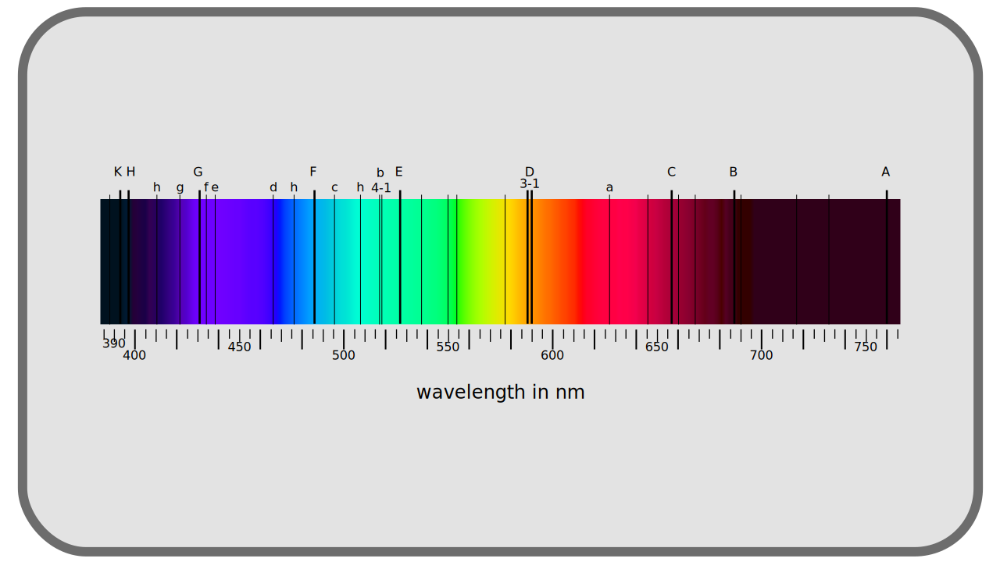
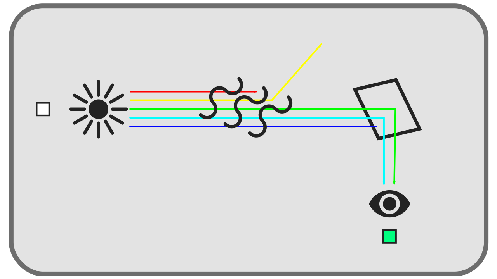

I.A - Qu’est ce que la couleur ?¶
Le mot couleur peut sembler simple et univoque, mais avant d’entrer dans le sujet, il est important d’expliquer ce que le mot couleur(s) recouvrira dans la suite de ces pages.
On entendra donc par couleur l’intégralité de la gamme de lumière que l’oeil humain peut percevoir, y compris dans ses nuances d’intensité. Le terme recouvre donc aussi bien la teinte que la saturation et la luminosité, termes avec lesquels les personnes appelées à manier les couleurs sont familiers. On sous-entend aussi qu’il y a un certain nombre de couleurs définies, que ce spectre complet est divisible en quanta, en briques. La taille du quantum de base, et incidemment le nombre de quanta de couleurs, le nombre de couleurs différentes, sera discutée par la suite.
A.1 - La couleur physique : la lumière visible¶
Ce que l’on appelle la couleur est donc la perception par l’être humain de la lumière visible, la lumière visible n’étant en réalité qu’une petite partie du spectre électro-magnétique.

Il faut bien comprendre, au vu de ce spectre en arc-en-ciel, que dans la nature, les sources de lumières monochromatiques sont rares, et l’on perçoit surtout un mélange de ces différentes fréquences ; les couleurs dont on va donc discuter ici comprennent à la fois ces sources monochromatiques mais aussi et surtout tous les mélanges possible entre elles, à différentes intensités. Ces mélanges représentent donc une infinité de nuances, une infinité de couleurs différentes, qu’il serait impossible de décrire toutes individuellement.
On essaie donc naturellement de se donner des repères dans toutes ces couleurs possibles, allant du noir au blanc en passant par les gris et dans toutes les teintes de l’arc-en-ciel (c’est à dire les lumières monochromatiques), rouge, orange, jaune, vert, bleu, violet… Le problème étant alors de se mettre d’accord sur ces dénominations et définir précisément ce qui est rouge et ce qui est pourpre par exemple.
Historiquement, une solution est venue de la découverte des raies de Fraunhofer, des discontinuités sombres dans le spectre de la lumière émise par le soleil, découvertes au début du XIXème siècle. Ces raies, provoquées par l’absorption de certaines fréquences par les milieux traversés par la lumière (dans l’atmosphère notamment), sont visible sur des longueurs d’ondes précises et ont été une des premières références pour définir des couleurs précises.

À ce problème de référence s’ajoute le fait que la définition de la couleur est intrinsèquement liée à la perception qu’on en a, et cette perception diffère évidemment d’une population à l’autre, d’un individu à l’autre, et aussi du milieu dans lequel on perçoit la couleur.
A.2 - Suivons une lumière¶
A.2.a - Le trajet : émission, transmission, réflexion, réception¶
La couleur que nous percevons est donc le résultat d’un groupe de rayons de lumière émis (“créé”) par une source donnée (le soleil, un écran, une ampoule…), qui a traversé un ou plusieurs milieux aux propriétés différentes qui en ont absorbé, dévié ou réémis une partie1, qui a été réfléchi par une ou plusieurs surfaces aux propriétés différentes qui en ont à leur tour absorbé, dévié ou réémis une partie, avant d’enfin atteindre un capteur : notre œil, ou celui d’une caméra…

A.2.b - Décomposition de la lumière reçue¶
Au final, quel qu’ait été le trajet de ce groupe de rayons de lumière, nous ne percevons que l’état dans lequel il est à l’arrivée : c’est la couleur perçue. Peu importe le chemin et leur provenance, toutes les couleurs sont la même chose : des groupes de rayons lumineux.
La couleur est donc “juste” un mélange d’un certains nombre de rayons lumineux parvenus à un capteur ou à notre œil. Chacun de ces rayons, ou photons* possède une longueur d’onde précise dite monochrome*, et si nous voyons des couleurs différentes de celles du spectre électro-magnétique, elles sont le résultat du mélange de tous ces rayons.
C’est la quantité de photons reçus formant cette couleur qui fait l’intensité, la luminance*, de la couleur, et le mélange des différentes longueurs d’ondes qui fait la teinte*.
Sources et références
-
On parle notamment de réfraction pour la déviation des rayons ↩